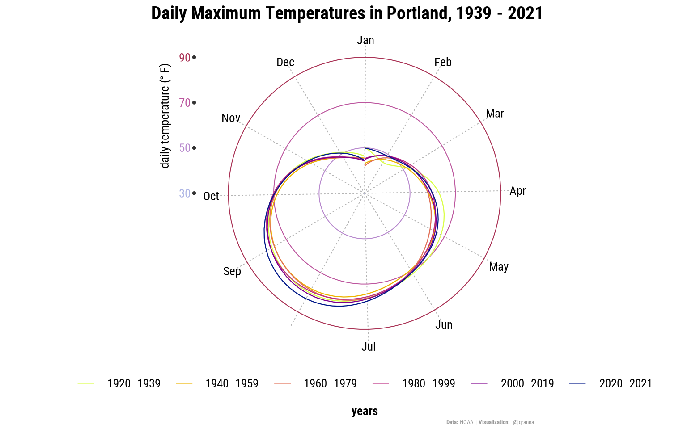
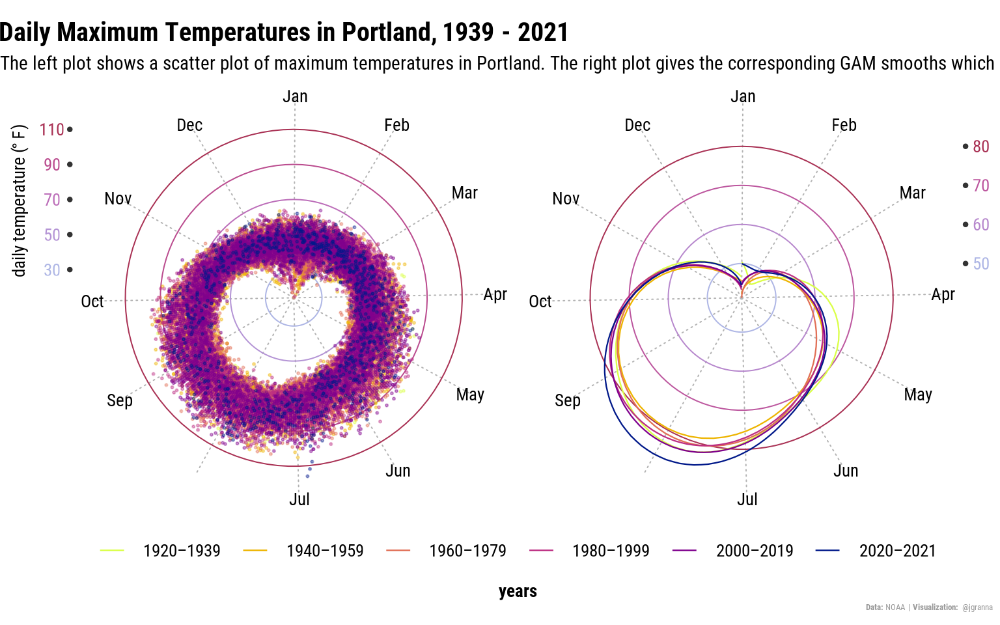

Canadian Heatwave
Regarding the exceptional heatwave in Canada in June 2021, I decided to pause TidyTuesday for a week and instead visualize minimum and maximum temperatures in Portland between 1938 and 2021. This work is inspired by a post by the New York Times and a tweet by Cedric Scherer.
Scatter Plot of Maximum Temperatures in Portland, Canada
June 26-28, 2021, were the hottest days ever recorded in Portland, Canada, reaching a maximum of 116 degrees Fahrenheit (roughly 46.7 degrees Celsius). To show how unusually hot these days are in the last roughly 80 years, I provide a scatter plot, where the outlier temperatures are easily identifyable. I choose a plot on a polar axis and to indicate possible time trends, I color the points corresponding to their respective 20-year period. I also color the main y-grid lines for slightly improved interpretability.
p <- df %>%
ggplot(aes(x = yday, y = tmax)) +
geom_point(aes(color = years), alpha = 0.4, size = 0.4) +
scale_color_discrete_sequential(palette = "Plasma") +
scale_x_continuous(breaks = months$yday, labels = months$label, expand = c(.001, .001)) +
scale_y_continuous(breaks = c(30, 50, 70, 90, 110), labels = c('30', '50', '70', '90', '110'), expand = c(.001, .001)) +
coord_polar() +
labs(
y = expression(paste("daily temperature (", degree ~ F, ")"))
) +
guides(
color = guide_legend(override.aes = list(size = 4, alpha = 1), nrow = 1, title.position = "bottom")
)
p +
labs(
caption = "**Data:** NOAA | **Visualization:** @jgranna",
title = "**Daily Maximum Temperatures in Portland, 1939 - 2021**"
)#ggforce::geom_mark_ellipse( #--- not included; optional ellipse marking ---#
# aes(fill = new_record, label = new_record, filter = new_record != "", description = desc),
# alpha = 0.5,color = "00000000", label.colour = "grey20", con.colour = "grey20",
# expand = unit(0, "mm"), con.cap = 5, show.legend = FALSE, label.buffer = unit(25, 'mm'),
# label.fontsize = c(25, 20), label.family = "osans"
#)Smoothed maximum temperatures
The three days in June 2021 are clearly visible at the bottom of the graph, close to July. However, possibly due to the mass of points, a time trend is not easily identifyable. In order to improve this, I plot smoothed functions of the 20-years periods. I choose a GAM smoother, which I chose more or less arbitrarily. However, this is sufficient to be able to identify a time trend. That is, maximum temperatures are generally increasing in Portland, which is of course little surprising.

Combine both graphs
Finally, for a better overview (and practice), I combine both plots using the patchwork- package:
library(patchwork)
p + theme(legend.position = "none") + p2 + theme(axis.text.y = element_text(margin = margin(0,6,0,4)), axis.title.y = element_blank()) + scale_y_continuous(position = "right") +
plot_layout(guides = "collect") +
plot_annotation(
caption = "**Data:** NOAA | **Visualization:** @jgranna",
subtitle = "The left plot shows a scatter plot of maximum temperatures in Portland. The right plot gives the corresponding GAM smooths which makes it easier to visually identify a time trend in the data.",
title = "**Daily Maximum Temperatures in Portland, 1939 - 2021**"
) &
theme(plot.caption = element_markdown(margin = margin(0,3,0,0))) 
Full R code available on Github.
Used Packages
colorspace-package:
https://colorspace.r-forge.r-project.org/articles/colorspace.htmlggtext-package:
https://wilkelab.org/ggtext/patchwork-package:
https://patchwork.data-imaginist.com/index.htmlshowtext-package:
https://github.com/yixuan/showtexttidyverse-package:
https://www.tidyverse.org/